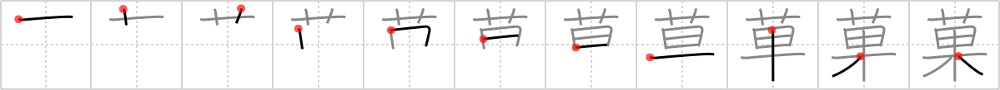

菓
← →
confectionary

Reading:
On-Yomi: カ
Heisig story:
Flowers . . . fruits.
Koohii stories:
1) [fuaburisu] 13-8-2007(218): This candy is made in the shape of a flower, each petal with the taste of a different fruit.
2) [Raichu] 14-1-2006(107): Candy is coloured like flowers and flavoured like fruit.
3) [pageturner1988] 5-2-2008(39): I think of Willy Wonka's factory where the flowers all bear candy fruits.
4) [uberclimber] 18-12-2010(25): Willy Wonka, the confectionary wizard, is probably the only man with the brains to develop a tree whose flowers are all candy. 菓子 かし pastry; 菓子 みずがし fruit.
5) [mantixen] 3-9-2008(16): In Japan, candy can be flavored like fruit or flowers (e.g. rose-flavored gum).